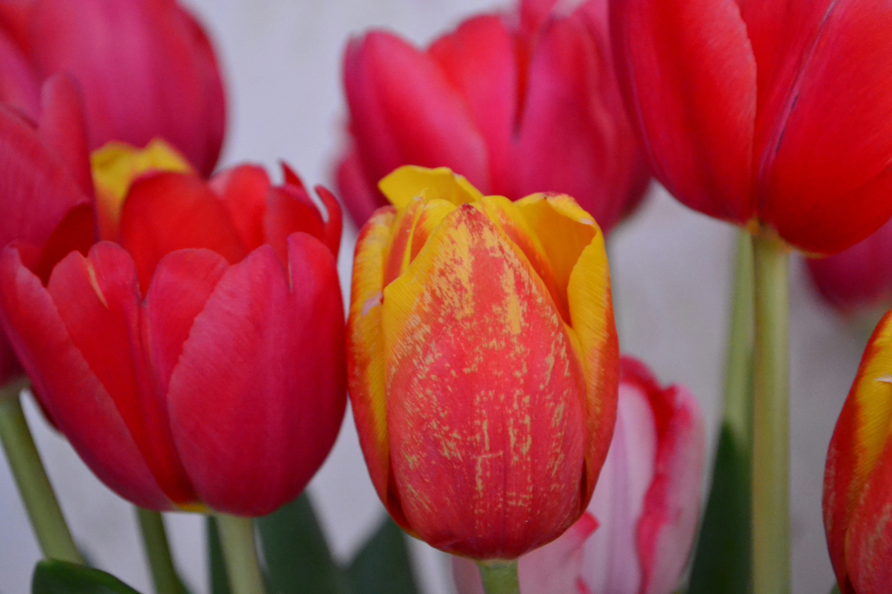
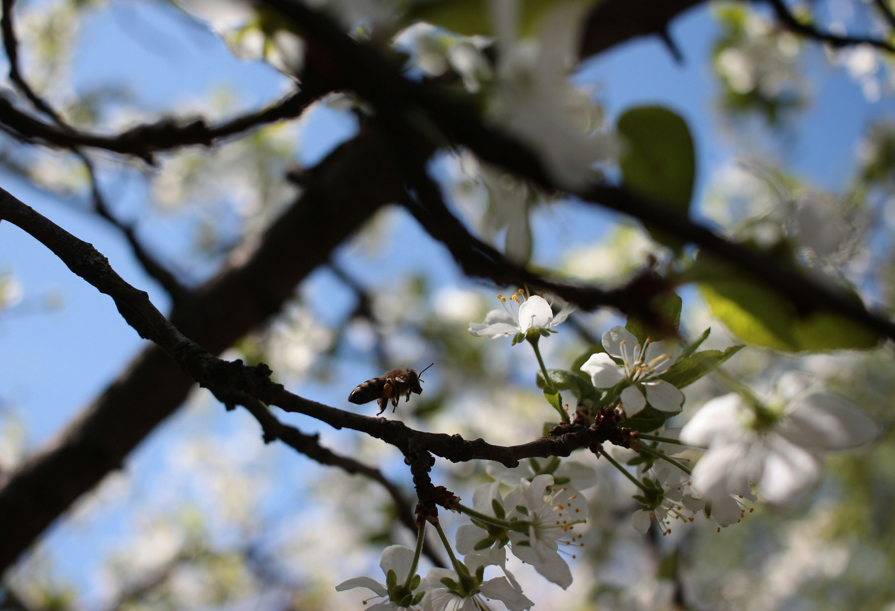
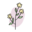

Весна 2024
Здравствуй, весенняя первая травка!
Как распустилась? Ты рада теплу?
Знаю, y вас там веселье и давка,
Дружно работают в каждом yглy.
Высyнyть листик иль синий цветочек
Каждый спешит молодой корешок
Раньше, чем ива из ласковых почек
Первый покажет зеленый листок.
Признаки весны:
- Оттепель
- Почки
- Подснежники
- Лужи
- Ручей
Календарь весны
| Марта |
31 день |
| Апрель |
30 дней |
| Май |
31 день |
Праздники весны
| Март |
8 - Женский день |
| Апрель |
1 - День смеха |
| 12 - День космонавтики |
| 28 - Вербное воскресение |
| Май |
1 - День труда |
| 9 - День Победы |
Галерея весны:



